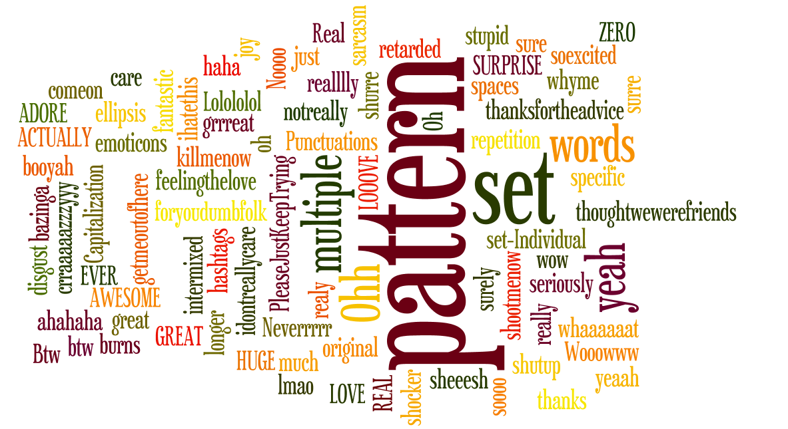

#sentiment
helping you findout the sentiment related to particular topic or personality
Phase 1 and Phase 2
- We collected a lot of tweets from twitter using the twitter api and built a dataset of tweets which are categorised as Positive, Negative and Neutral.
- The data set was polished by replacing unnecessary and irrelevant text (hashtags, links, usernames) with placeholders.
- We then mined for frequently occuring patterns in the dataset and extracted salient features from each of the tweets.
All in all, we built a corpus of common patterns and feature vectors for every tweet.
So given any tweet, we now extract its features and then using Support Vector Machine Learning Algorithm we categorised the tweets.Phase 3 and Phase 4
Further, we manually looked at all the tweets and listed the features of sarcastic tweets.
The features ranged from usage of specific hashtags to emoticons to some common phrases. Capitalization of text also showed itself as a prominent feature...
Depending on the presence of these faetures in the tweet, we determine its sarcasm level.
The features ranged from usage of specific hashtags to emoticons to some common phrases. Capitalization of text also showed itself as a prominent feature...
Depending on the presence of these faetures in the tweet, we determine its sarcasm level.
The final sarcasm level is determined by the combination of the above four phases.
Though very preliminary, we hope this will help Leonard keep Sheldon at bay!
Atleast until we roll out the next improved version... :-)